Formation
Retour sur notre première session de formation IA
Women in AI Cameroon a organisé une session dédiée aux femmes et aux jeunes, axée sur l'appropriation concrète de l'IA.
Lire l'article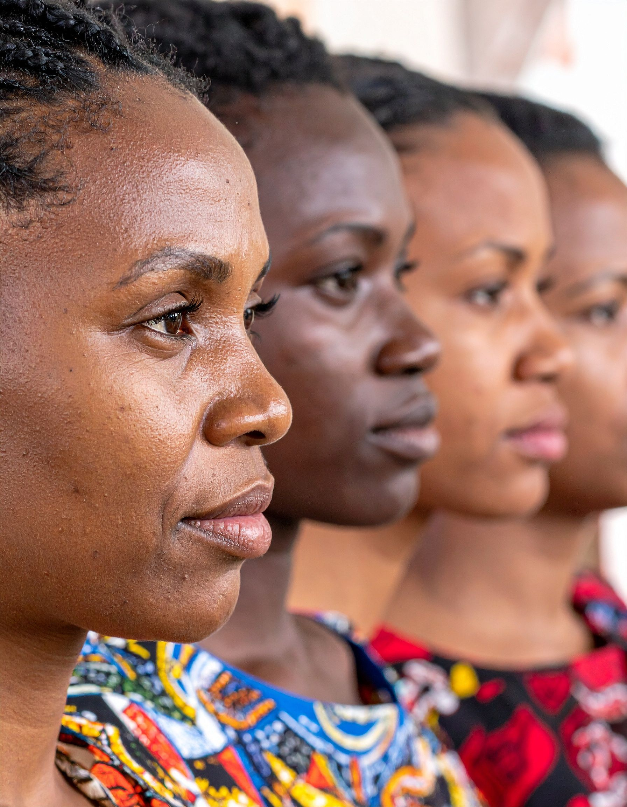
Ensemble, construisons un futur où les femmes camerounaises sont au cœur de l'innovation technologique. L'IA pour toutes, l'avenir entre nos mains.
Contribuez à la formation et l'accompagnement de la prochaine génération de leaders en IA.
Faire un donRejoignez une communauté bienveillante et solidaire de femmes passionnées par la tech.
S'inscrireDevenez partenaire et associez votre image à l'inclusion et l'innovation au Cameroun.
CollaborerNous déployons des programmes concrets pour démocratiser l'IA et soutenir les projets innovants menés par des femmes.
Sensibiliser les jeunes à l'IA et encourager la création d'emplois dans le numérique.
Voir les formations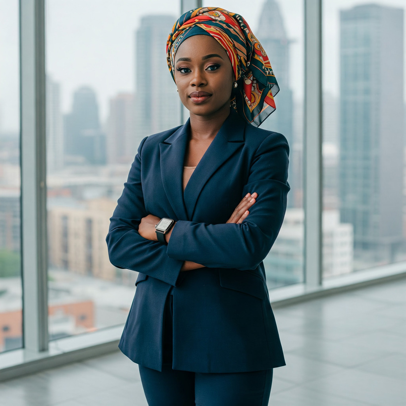
MentoratFormer des ambassadrices régionales au leadership numérique et à la vulgarisation de l'IA.
Trouver un mentor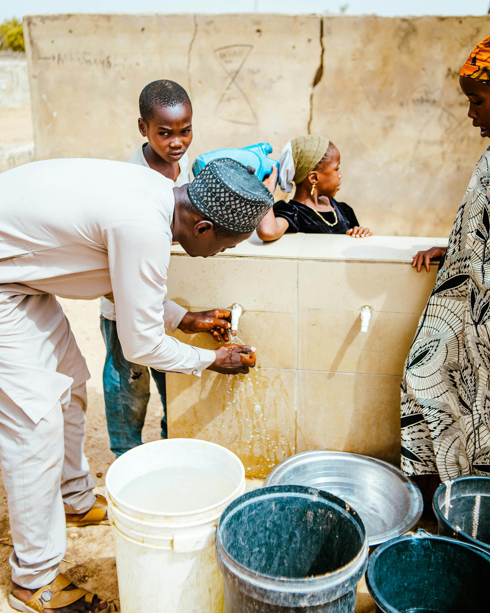
InnovationDévelopper des micro-projets locaux où l'IA répond à des besoins concrets.
Découvrir les projets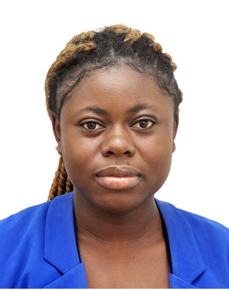
"J'utilise l'IA comme un outil d'optimisation pour gagner en efficacité. Je la considère comme une opportunité majeure d'autonomisation des femmes au Cameroun."
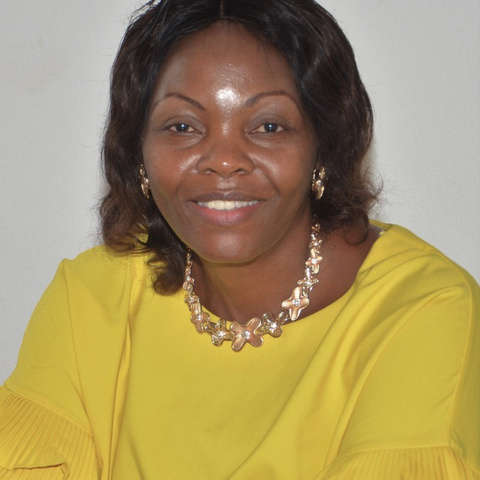
"La recherche m'a conduite à l'IA. Aujourd'hui, je me définis comme une « chercheure augmentée », convaincue que l'IA est un allié du quotidien pour toutes les femmes."
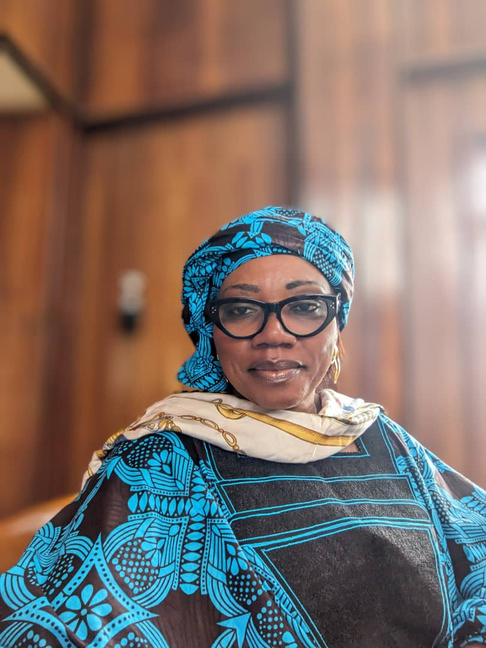
"J'utilise l'intelligence artificielle comme un facilitateur au quotidien dans la gestion de mes entreprises. Cet outil me permet de gagner du temps et de créer de la valeur."
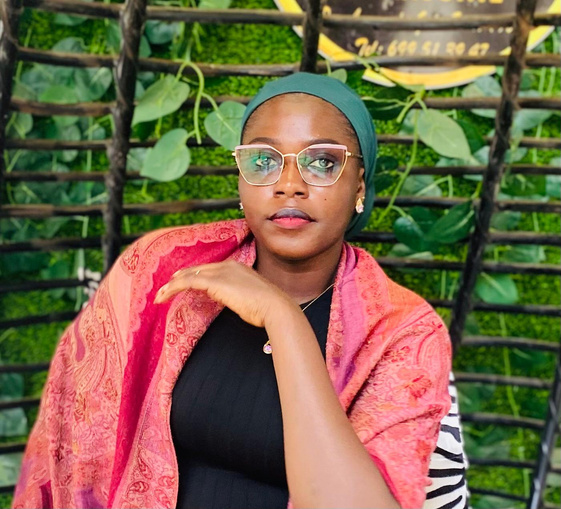
"Mon engagement vise à vulgariser l'IA et à l'ancrer dans le quotidien professionnel des femmes. Gestionnaire RH, je crois en une IA qui réduit les inégalités."
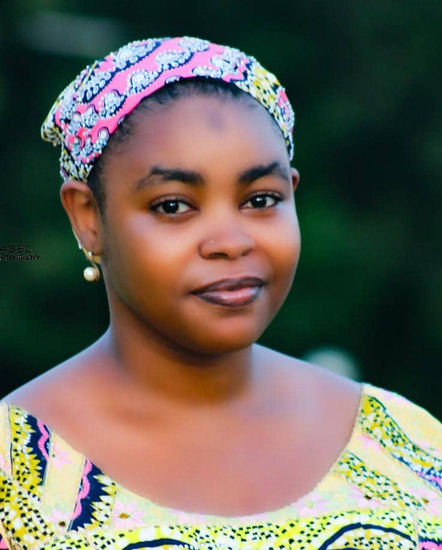
"Je perçois l'IA comme un outil capable de faciliter le quotidien des femmes et de favoriser leur épanouissement dans tous les environnements."
"Chaque téléphone Android est aujourd'hui un outil puissant permettant à la jeune fille et à la femme de construire son avenir."
Rejoignez le mouvement Women In AI Cameroon et participez à l'émergence d'une technologie inclusive et porteuse de sens.
Découvrez notre mission, notre vision et notre équipe dévouée à l'inclusion dans l'IA.
Women in AI Cameroon (WAI-CAM) est un mouvement citoyen qui vise à démystifier l'intelligence artificielle et à la rendre accessible à toutes les femmes, quel que soit leur âge, leur métier ou leur niveau d'éducation.
Son ambition : démocratiser l'IA au Cameroun, en la rendant accessible, utile et humaine.

Un Cameroun où chaque femme, du Nord au Sud, de l'Est à l'Ouest, comprend comment l'IA influence son quotidien et sait l'utiliser pour entreprendre, apprendre et décider.
Promouvoir une intelligence artificielle inclusive, éthique et participative au service du développement durable et du leadership féminin.
Notre ambition est claire : œuvrer pour que les femmes camerounaises et africaines ne soient pas spectatrices mais actrices et pionnières de la révolution de l'intelligence artificielle.
Nous formons toutes les femmes, quelle que soit leur formation de départ.
Nos programmes répondent aux défis concrets du Cameroun avec des solutions IA pertinentes.
Pas besoin d'être ingénieure pour comprendre l'IA.
Des femmes qui forment et inspirent d'autres femmes.
L'IA comme levier d'autonomie et de décision.
Derrière WAI-CAM se trouvent des personnalités engagées, issues de différents horizons professionnels.
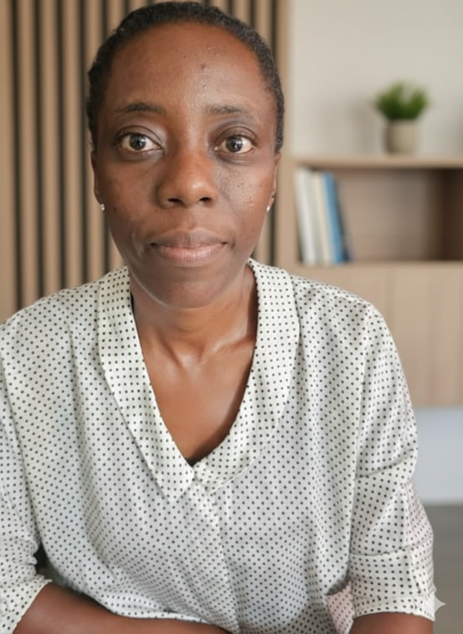
Créer un mouvement citoyen où chaque femme comprend l'impact de l'IA dans sa vie.
Vulgariser l'IA et l'ancrer dans le quotidien professionnel des femmes.
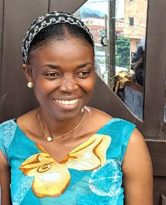
L'IA est un véritable levier d'innovation et de productivité.
Accompagner les femmes dans le développement de nouvelles compétences.
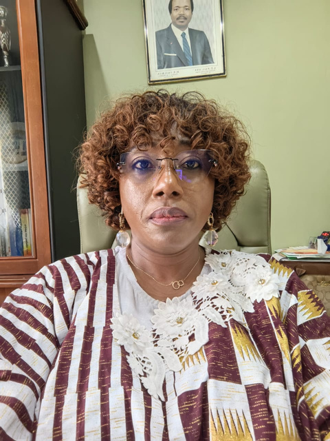
Militer pour une utilisation éthique et responsable de l'IA.
Utiliser l'IA pour promouvoir l'inclusion et l'autonomisation des femmes.
L'IA comme facilitateur au quotidien dans la gestion d'entreprises.
L'IA est une opportunité historique pour les femmes africaines.
L'IA comme outil d'optimisation et d'autonomisation.
Faciliter le quotidien des femmes grâce à l'IA.
Chercheure augmentée, convaincue que l'IA est un allié pour toutes.
L'IA comme levier essentiel de lutte contre la pauvreté.
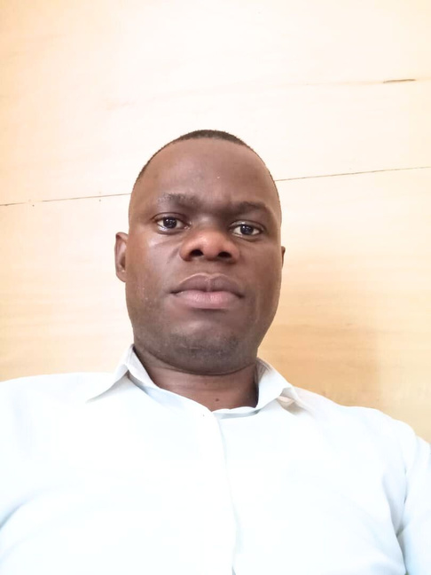
Contribuer à l'autonomisation des couches sociales vulnérables à travers des outils accessibles.
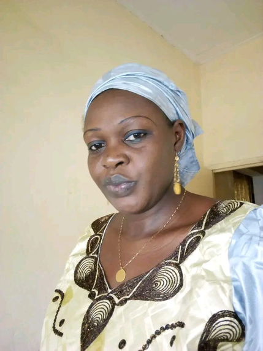
L'IA comme levier pour transformer les données en solutions créatrices de valeur.
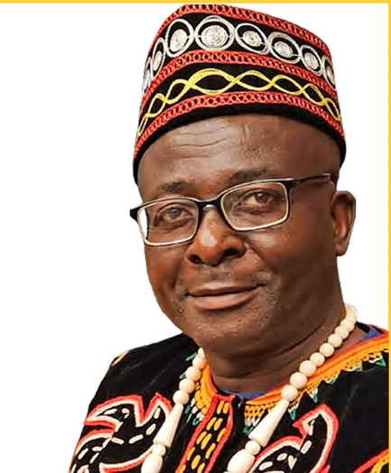
L'IA est une opportunité historique pour les femmes africaines, dans la continuité de la vision de Nelly Chatue-Diop.
L'IA comme partenaire éthique capable de corriger les inégalités et créer des environnements plus justes.
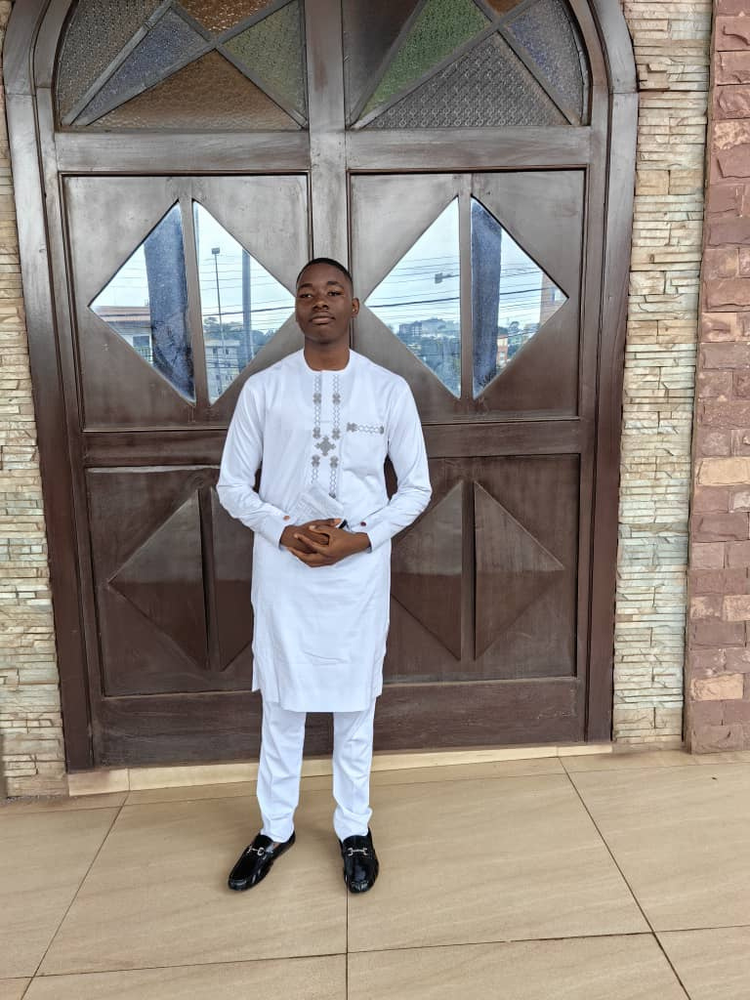
Passionné de génie civil et d'IA appliquée aux infrastructures, développeur de VibraSafe.
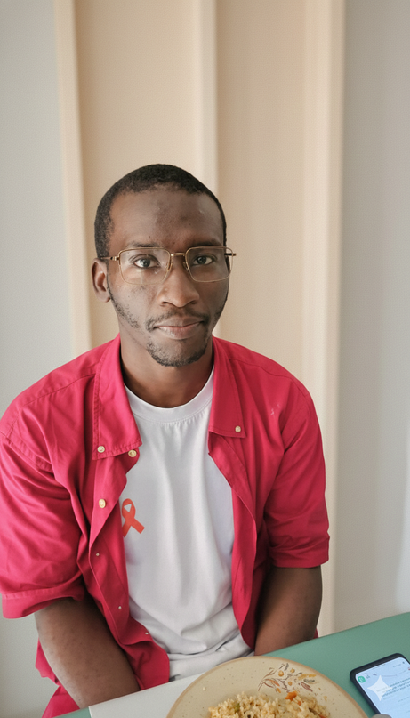
L'IA comme levier d'autonomisation des femmes par l'éducation, l'innovation et l'entrepreneuriat.
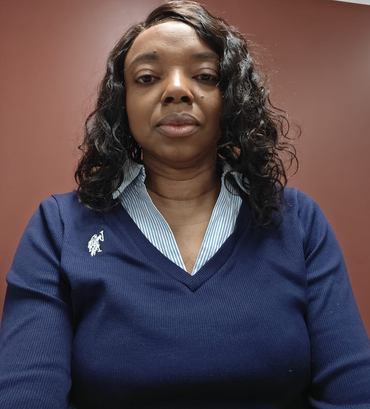
L'IA comme puissant outil d'autonomisation des femmes, accessible à toutes et créateur d'opportunités durables.
Engagé pour la vulgarisation de l'IA et l'autonomisation des femmes au-delà des frontières.
C'est avec une profonde tristesse que Women in AI Cameroon rend hommage à Nelly Chatue-Diop, notre Responsable Antenne Littoral / Sud-Ouest, qui nous a quittés le 8 janvier 2026.
Visionnaire dans le domaine de l'innovation et de l'inclusion financière, elle s'était illustrée par son engagement à démocratiser l'accès aux technologies pour les populations africaines.
Pour concrétiser sa vision, Women in AI Cameroon déploie quatre programmes structurants.
Sensibiliser les jeunes à l'IA et encourager la création d'emplois dans le numérique.
Accompagner les femmes du secteur public à utiliser l'IA pour améliorer leurs performances.
Former des ambassadrices régionales au leadership numérique et à la vulgarisation de l'IA.
Développer des micro-projets locaux où l'IA répond à des besoins concrets : santé maternelle, marchés agricoles, éducation des filles.
Des formations en ligne et en présentiel adaptées à vos objectifs.
Comprendre les fondamentaux de l'intelligence artificielle sans prérequis technique.
Maîtrisez les bibliothèques Pandas, NumPy et Scikit-Learn pour l'analyse de données.
Développement et déploiement de modèles prédictifs. Prérequis : Python.
Retrouvez nos publications et éditions spéciales sur l'IA et les femmes au Cameroun.
Dossier spécial sur les initiatives locales d'IA inclusive et témoignages de nos ambassadrices.
LireFocus sur notre programme jeunesse : bootcamps, concours d'idées et success stories.
LireRetour sur la création du mouvement, notre vision fondatrice et les premiers pas.
LirePanorama des usages de l'IA sur le continent et des opportunités pour les femmes.
LireSuivez les dernières nouvelles, analyses et réflexions de la communauté WAI-CAM.
Women in AI Cameroon a organisé une session dédiée aux femmes et aux jeunes, axée sur l'appropriation concrète de l'IA.
Lire l'articleComment notre mouvement s'inscrit dans les ODD 4, 5 et 9 pour promouvoir une IA inclusive au Cameroun.
Lire l'articleRetour sur le parcours exceptionnel de Nelly Chatue-Diop, pionnière de la fintech en Afrique.
Lire l'articleComment les femmes entrepreneures camerounaises utilisent l'IA pour structurer leurs activités.
Lire l'article
Selon l'UNESCO, la fracture numérique de genre reste un défi majeur. Notre approche pour inverser la tendance.
Lire l'article
Masterclasses, bootcamps, mentorat et concours d'idées pour la jeunesse camerounaise.
Lire l'articleNe manquez aucun événement de la communauté Women in AI Cameroon.
Comprendre et s'approprier concrètement l'IA au quotidien professionnel.
Conférences et panels dédiés aux innovations portées par les femmes.
Atelier pratique pour faire ses premiers pas en Data Science.
Revivez les moments forts de notre communauté.


Accédez à nos formations premium, ressources et services.
Accès illimité aux vidéos et ressources de la masterclass de base.
Accès illimité aux vidéos et ressources de la masterclass intermédiaire.
Accès illimité aux vidéos et ressources de la masterclass avancée.
Accès illimité aux vidéos et ressources de la masterclass spécialisée.
Votre don permet de former la prochaine génération de femmes leaders en IA.
Choisissez le montant de votre soutien
Paiement 100% sécurisé (SSL)
Associez votre image à l'inclusion et l'innovation numérique au Cameroun.
Women in AI Cameroun invite les institutions publiques et privées, les entreprises et les partenaires techniques à rejoindre le mouvement en faveur d'une intelligence artificielle inclusive.
En devenant partenaires, vous contribuez à :
Les partenaires bénéficient de :
Vous souhaitez soutenir nos actions et associer votre entreprise à l'innovation et l'inclusion numérique au Cameroun ?
Contactez notre équipeDécouvrez l'impact de nos programmes à travers la voix de nos membres.
"Mon engagement vise à vulgariser l'IA et à l'ancrer dans le quotidien professionnel des femmes."
"J'ai découvert l'IA à travers les réseaux sociaux et j'y ai vu un véritable levier d'innovation et de productivité."
"J'utilise régulièrement l'IA pour mes recherches académiques. Je milite pour une utilisation éthique de l'IA."
"Aujourd'hui, je me définis comme une « chercheure augmentée », convaincue que l'IA est un allié du quotidien."
"Je considère l'IA comme une opportunité majeure d'autonomisation des femmes au Cameroun."
"Chaque téléphone Android est un outil puissant permettant à la femme de construire son avenir."
Une question, une suggestion ? N'hésitez pas à nous écrire.
919 Boulevard de Rey-Bouba, Mballa 2
B.P.: 1 444 Yaoundé – Cameroun
(+237) 222 20 58 53 / 682 573 699 / 698 164 869
womeninaicameroon@gmail.com
womeninai.cam@gmail.com
Découvrez notre bibliothèque de tutoriels, replays de webinaires et datasets pour vos projets IA.
Accéder à la bibliothèque